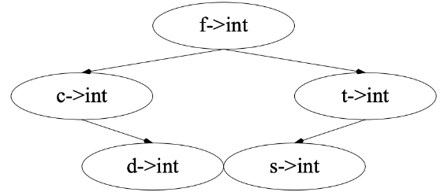

语义分析¶
约 2186 个字 56 行代码 预计阅读时间 8 分钟
问题提出与定义¶
很多事情不能通过语法分析来决定，例如：
- 引用的维度是否与声明相匹配？
- 数组访问是否越界？
- 变量应该存储在哪里（堆、栈 ...）？
- ...
限制的原因是，回答这些问题取决于具体的值而不是语法，这就是语义分析的任务
广义上，通常我们分析程序的语义，通过遍历/分析各种程序表示来完成：
- Abstract Syntax Tree (AST)
- Control Flow Graph (CFG)
- Program Dependence Graph (PDG)
- Value Flow Graph (VFG)
- SSA (single static assignment)
具体的语法分析的流程如语义分析示例：
- 类型检查（Type Checking）
- 代码生成（Code Generation）
- 死代码消除（Dead Code Elimination）
- 寄存器分配（Register Allocation）
狭义上，也就是我们课程中的定义，是
- 通过 AST 确定程序的一些静态属性，例如：
- 名称（name）的范围（scope）和可见性
- 确保每个变量在使用前都被声明
- 变量、函数和表达式的类型
- 每个表达式都有一个正确的类型
- 函数调用符合定义
- ...
- 名称（name）的范围（scope）和可见性
- 将 AST 翻译成一些中间代码
- 虎书第七节
一些语义分析报错的示例
符号表¶
定义¶
绑定（Binding）：赋予符号含义，用 \(\mapsto\) 表示，例如：
| Name/Symbol | Meaning/Attribute |
|---|---|
| type identifier | type (e.g., int, string) |
| variable identifier | type, value, access info, ... |
| function identifier | args.&result type, ... |
环境（Environment）：一组绑定，例如：\(\left\{ \text{g} \mapsto \text{string}, \text{a} \mapsto \text{int} \right\}\)
符号表（Symbol Table）：环境的具体实现，如可以保存历史版本的可持久哈希表
符号表的示例
假设一开始的环境是 \(\sigma_0\)，每个局部变量都有一个可见的 scope
- 在第 2 行中，可以在 \(\sigma_1\) 中查找标识符 \(a\)，\(c\)
- 在第 3 行中，环境被更新
- 在第 4 行中，\(\sigma_3\) 中的 \(\left\{ a \mapsto \text{string} \right\}\) 覆盖了 \(\sigma_2\) 中 \(a\) 的 binding
- 在第 6 行中，\(\sigma_3\) 和 \(\sigma_2\) 均被丢弃并且 \(\sigma_1\) 被返回
多个符号表
在某些语言中，可以同时存在多个活动环境：程序中的每个 module、class 或 record 都有自己的符号表，例如如下的 Java 代码：
package M;
class E {
static int a = 5;
}
class N {
static int b = 10;
static int a = E.a + b;
}
class D {
static int d = E.a + N.a;
}
及其对应的符号表示例：
在 Java 中，允许前向引用，所以 E、N、D 都是在环境 \(\sigma_7\) 下编译的，分析结果为 \(\left\{ M \mapsto \sigma_7 \right\}\)
符号表的实现¶
从上述描述中，可以看出符号表的实现需要支持以下操作：
- insert: 将名称绑定到相关信息（如类型），如果名称已在符号表中定义，则新的绑定优先于旧的绑定
- lookup: 在符号表中查找名称，以找到名称绑定的信息
- beginScope: 进入一个新的作用域
- endScope: 退出作用域，将符号表恢复到进入之前的状态
为了实现这些功能，有两种风格的实现方式：
- Imperative Style
- 有了新的就看不到老的，但是退出 scope 时还能回得去，过程如：
- 修改 \(\sigma_1\) 使其变为 \(\sigma_2\)
- 当 \(\sigma_2\) 存在时，我们不能看到 \(\sigma_1\) 的内容
- 退出 scope 时，将 \(\sigma_2\) 恢复为 \(\sigma_1\)
- 有了新的就看不到老的，但是退出 scope 时还能回得去，过程如：
- Functional Style
- 每次发生变化的时候旧的都保留着，过程如：
- 在创建 \(\sigma_2\) 和 \(\sigma_3\) 的同时保持 \(\sigma_1\) 处于原始状态
- 退出 scope 时，将 \(\sigma_2\) 和 \(\sigma_3\) 丢弃，可以轻松获得 \(\sigma_1\)
- 每次发生变化的时候旧的都保留着，过程如：
Efficient Imperative Symbol Tables¶
两个简单的问题
- 如何支持高效查找？
- 使用哈希表，如 \(\sigma ' = \left\{ a \mapsto \text{int} \right\}\)，即在哈希表插入
<a, int>
- 使用哈希表，如 \(\sigma ' = \left\{ a \mapsto \text{int} \right\}\)，即在哈希表插入
- 如何支持删除并恢复到之前的环境？
- 具有外部链接的哈希表，如使用链表连接
hash(a) -> <a, int> -> <a, string> -> ...
- 具有外部链接的哈希表，如使用链表连接
数据结构¶

由上可知，需要两种基本的结构：
- Hash Table：用于存储一系列 buckets
- Bucket：用于存储一系列 entries（每个 entry 是一个 binding）
数据结构如下：
struct bucket {
string key;
void *binding;
struct bucket *next;
};
#define SIZE 109
struct bucket *table[SIZE];
unsigned int hash(char *s0) {
unsigned int h=0; char *s;
for(s=s0; *s; s++) {
h = h * 65599 + *s;
// h = (a^(n-1)c_1 + a^(n-2)c_2 + ... + ac_{n-1} + c_n)
}
return h;
}
struct bucket *Bucket (string key, void *binding, struct bucket *next) {
struct bucket *b = checked_malloc(sizeof(*b));
b->key = key;
b->binding = binding;
b->next = next;
return b;
}
查找¶
查找（Lookup）：根据 identifier key 在符号表 table 中查找条目
考虑使用 key 来查找 binding 的过程：
- 对 key 使用哈希函数来获得数组索引
index - 遍历
table[index]中的 bucket 链表，直到找到或者链表结束（table[x]包含所有 key 映射到x的 entries）
void *lookup(string key) {
int index = hash(key) % SIZE
struct bucket *b;
for (b = table[index]; b; b=b->next) {
if (0==strcmp(b->key,key)) {
return b->binding;
}
}
return NULL;
}
查询示例

假设想要查找标识符 a 的类型，假定 hash(a) = 0，则可以通过 table[0] 的第一个元素开始逐一比较
插入¶
插入（Insert）：在 bucket 前面插入新元素
考虑 \(\sigma + \left\{ a \mapsto \tau_2 \right\}\) 的插入过程，其中 \(\sigma\) 包含 \(a \mapsto \tau_1\)：
- 插入函数将 \(a \mapsto \tau_1\) 留在原地，将 \(a \mapsto \tau_2\) 插入到链表的头部
- 也就是变成
hash(a) -> <a, τ2> -> <a, τ1> -> ...
void insert(string key, void *binding) {
int index = hash(key) % SIZE;
table[index] = Bucket(key, binding, table[index]);
}
插入示例
恢复¶
恢复（Restore）：将符号表恢复到之前的状态，即从 bucket 头部删除元素
在上述插入场景下，考虑到达 a 的 scope 末尾：
- 从
table[0]的头部使用pop(a)删除<a, τ2>（插入和弹出以类似栈的方式工作） - 也就是变成
hash(a) -> <a, τ1> -> ...
恢复示例

处理 scope 的方式
为了处理不同 scope，还需其他辅助信息，比如指导“需要 pop 几次”，例如可以使用一个栈，每次进入 scope 时 push 一个特定的值，退出 scope 时一直 pop 直到遇到这个值
Efficient Functional Symbol Tables¶
基于函数式编程中的“不可变数据结构”思想，可以使用二叉查找树（binary search tree, BST）来实现：
- 每个结点包含从 identifier (key) 到 binding 的映射
- 使用字符串间的比较做 less than 排序
- 对于某一中间结点 \(l\)，其左子树为 \(L\)，右子树为 \(R\)
- 对于 \(\forall x \in L, key(x) < key(l)\)
- 对于 \(\forall x \in R, key(x) > key(l)\)
查找¶
使用二叉查找树的查找过程，对于 \(n\) 个结点的树，最坏情况下的时间复杂度为 \(O(\log n)\)
查找示例

插入¶
将从根结点到插入结点的父结点路劲间的所有结点复制一份，然后插入新结点，以避免完整复制所有旧版本
插入示例
符号表实现的总结¶
两种方法对于 lookup, insert, beginScope, endScope 等接口的支持，复杂度上各有优势
- Imperative Symbol Tables（具有副作用）
- 当进入 scope 之后，entries 被添加到表中，因副作用旧表被摧毁
- 当退出 scope 之后，使用辅助信息来移除之前的插入。旧表被恢复
- Functional Symbol Tables（无副作用）
- 当进入 scope 之后，通过添加到旧环境来创建新环境，旧表保持不变
- 当退出 scope 之后，丢弃新环境，旧表保持不变
另一种 Efficient Functional Symbol Tables
使用哈希表，在新插入的时候，将旧表复制一份，然后插入新的 entry，这样可以保持旧表不变
*Tiger 编译器中的符号表¶
TODO
类型检查¶
即通过 AST 确定程序的一些静态属性中讲述的内容，
类型及其作用¶
编程语言中的类型概念¶
- 变量的类型
- 限定了变量在程序执行期间的取值范围
- 类型化的语言（typed language）
- 变量都被给定类型的语言，如 C/C++、Java、Go
- 表达式、语句等程序构造的类型都可以静态确定
- 未类型化的语言（untyped language）
- 不限制变量值范围的语言, 如 LISP、JavaScript
- 没有静态确定的类型，而并非没有类型
类型在编程语言中的作用¶
- 开发效率：更高层次的编程抽象
- 多态、代数数据类型、依赖类型…
- hoogle 利用类型信息搜索 API
- 运行性能：类型指导的编译优化
- 静态类型绑定避免运行时检查
- 类型信息优化内存布局
- 安全可靠：内存安全乃至功能正确
- Rust 线性类型保障内存安全
- LiquidHaskell 精化类型保障功能正确
- 例如 Refinement Type 类型签名
add_two (x: int | x > 0 ) → x + 2
- 例如 Refinement Type 类型签名
*类型系统的形式化¶
以自然数为例，其逻辑系统如下：
- 自然数表达式
- \(a + b\), \(3\)
- 良形公式
- \(a + b = 3\), \((d = 3) \land (c = 2)\)
- 推理规则
- \(\frac{\mathbf{a}<\mathbf{b}, \mathbf{b}<\mathbf{c}}{\mathbf{a}<\mathbf{c}}\)
程序语言的类型系统也是一种逻辑系统：
- 类型表达式
- \(\text{int}\), \(\text{int} \rightarrow \text{int}\)
- 定型断言（typing assertion）
- \(x: \text{int} \vdash x + 1: \text{int}\)
- 定型规则（typing rules）
- \(\frac{\Gamma \vdash M: \text{int, } \Gamma \vdash N: \text{int}}{\Gamma \vdash M+N: \text{int}}\)
*Tiger 编译器中的类型系统¶
TODO
*Tiger 编译器中的类型检查¶
TODO
创建日期: 2024年6月21日 00:24:27